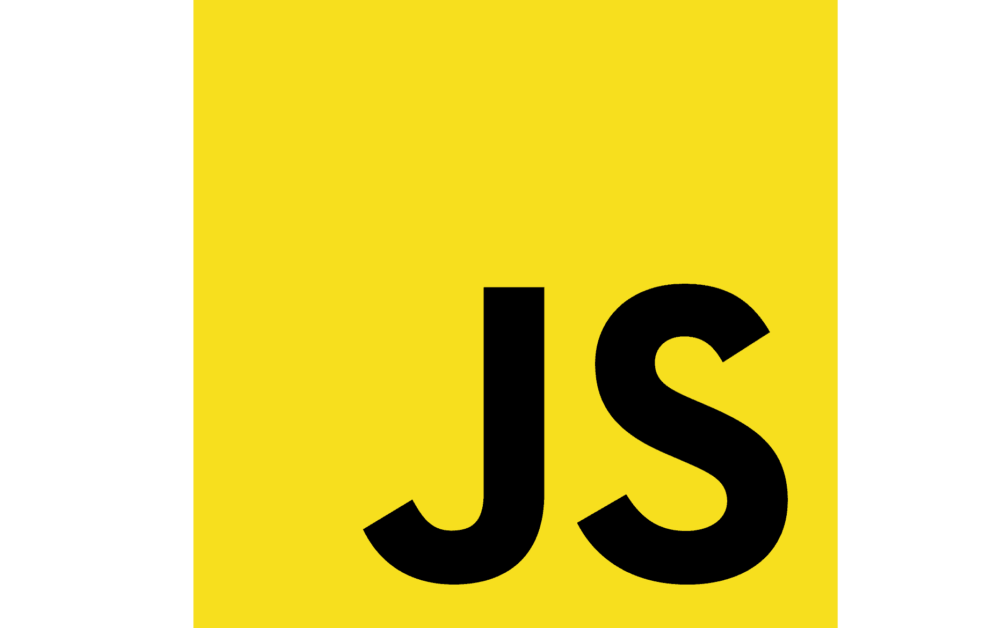
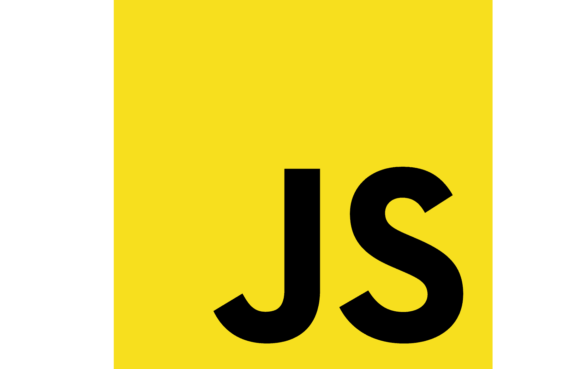

Desenvolvedor Full-Stack
Olá! Me chamo Hugo. Sou desenvolvedor Full-Stack com especialidade em Java, Python, JavaScript, C#, Node.js, HTML e CSS, linguagem SQL. Também trabalho com Análise e Ciência de Dados, utilizo Python e PowerBI. SAIBA MAIS

 



SAIBA MAIS SOBRE MIM
Atualmente, curso Análise e Desenvolvimento de Sistemas na Fatec Taubaté possuo PR 9.30.
Sou comunicativo, trabalhador e proativo. Tenho facilidade em trabalhar em equipe e geralmente adoto posturas de liderança caso necessário. Me interesso em desenvolvimento de software, ciência de dados e inteligência artificial. Investindo regularmente em cursos e treinamentos para aprimorar minhas habilidades. Possuo paixão por tecnologia e constante busca por novos conhecimentos.
Gosto de viver de forma equilibrada. Trabalho, estudo e sempre busco aprender algo novo. Nos momentos livres, adoro viajar, curtir a praia e manter o corpo e a mente ativos na academia.
Currículo
2024 - 2026
Fatec Taubaté | Tecnólogo
Cursando Análise e Desenvolvimento de Sistemas
Competências: C (Linguagem de Programação), C# (Programação em Microinformática) e C++ (Estrutura de Dados)
Disciplinas complementares: Administração, Contabilidade, Economia e Finanças, Arquitetura de Computadores, Laboratório de Hardware, Cálculo e Estatística Aplicada
Certificados
Treinamento Supervisionado Dynamics 365 e Power Platform
Smart Consulting (176hrs)
Competências: Power Apps Canvas e Model Driven, Power BI, C#, Power Automate, Segurança e Dataverse
Java Cloud Native
DIO (90hrs)
Competências: Java POO, SpringBoot Framework, API REST, SQL, Azure, Serviços Cloud de IA
.NET C#
DIO (105hrs)
Competências: C# .NET, POO, API .NET, SQL SERVER, GIT/GITHUB, Azure
Python Developer
DIO (57hrs)
Competências: Python POO, Copilot Studio
Administrador de Banco de Dados
IFRS Moodle (200hrs)
Competências: Linguagem SQL, Modelagem, Design e Arquitetura de Bancos de Dados: MySQL e PostgreSQL
Programação Web
IFRS Moodle (200hrs)
Competências: HTML, CSS, JavaScript
Python para Análise e Ciência de Dados
DSA (72hrs)
Competências: NumPy, Pandas, Matplotlib, Seaborn, Scikit-Learn, TensorFlow
Power BI para Business Intelligence e Data Science
DSA (72hrs)
Competências: Dashboards, Power Query, DAX, Linguagem M, KPIs, SQL Analytics
Abril 2025 - Novembro - 2025
+PraTi | CodificaEdu
Dev. Full Stack Jr. (240hrs)
Competências: HTML, CSS, JS, React.js, Node.js, Java, API's Rest, MySQL e PostgreSQL, Docker, DevOps e Inteligencia Artificial com Python
Disciplinas complementares: Scrum e Kanban, Desenvolvimento de soft skills, Git e GitHub
Aprimoramento
Versionamento de Código
Moodle PUCRS (24hrs)
Competências: Fundamentos do Git, branches, head, merge,.gitignore, tags, stashing, CI/CD, Git Hooks e técnicas de Garbage Collection.
Design para quem não é design
Moodle PUCRS (24hrs)
Competências: Alinhamento, Contraste, Cores, Tipografia, Fontes
Gestão de Infraestrutura de TI
FIAP (60hrs)
Competências: Sistemas Operacionais, Sistemas de Informação e Banco de Dados
DevOps & Agile Culture
FIAP (60hrs)
Competências: DevOps, Metodologias e Melhores Práticas de Desenvolvimento de Software, UML e Diagramas de Caso de Uso
Business Intelligence
FIAP (40hrs)
Competências: Processos de tomadas de decisão, Modelagem dimensional, ETL
Big Data & Analytics
FIAP (60hrs)
Competências: Governança de Big Data, Linguagem R, Visualização de Dados com TABLEAU
User Experience UX
FIAP (60hrs)
Competências: Protótipos e Design, Pesquisas e Dados, Conceitos e Ferramentas
Linux Fundamentos
FIAP (40hrs)
Competências: Primeiros Comandos, Administração de Sistema e Editor de Texto
Projetos
Site de Investimentos
Fiz um site de investimentos completamente do zero utilizando meus conhecimentos em HTML, CSS e JavaScript

Jogo 2D em Java
Fiz um jogo em java que tem uma nave no espaço que atira e tem que desviar das naves inimigas

Redução de Dimensionalidade de Imagens
Fiz um Projeto em Python que serve para converter imagens para dois tipos diferentes: níveis de cinza e binarizada (preto e branco)

Robo Trading
Fiz um Projeto em Python de um robo que compra e vende ações utilizando aprendizado por reforço Q-Learning